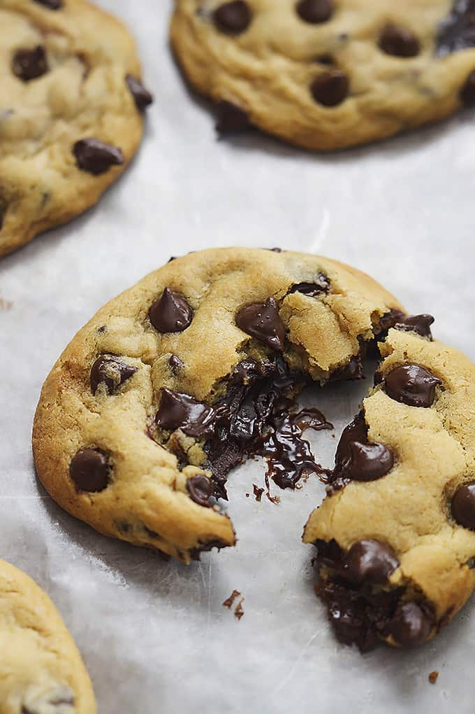

Lasagna

Description
Ingredients
- 1/2 cup hot fudge topping
- 1 tbsp hot fudge topping
- 2 1/2 cups all-purpose flour, plus more for dusting
- 1 tsp baking soda
- 1 tsp kosher salt
- 1 cup unsalted butter, softened
- 3/4 cup white sugar
- 3/4 cup packed light brown sugar
- 2 large eggs, at room temperature
- 1 tsp vanilla extra
- 1 (12 ounce) package semisweet chocolate chips
Steps
- Line a piece of parchment paper on a baking sheet. Portion the hot fudge into 18 balls. Freeze for at least 30 minutes to 12 hours
- Brown the ground beef
- Cook the bell pepper, onions, garlic, add back the beef
- Transfer to medium sized pot, add tomatoes and remaining sauce ingredients to build the sauce
- Boil and drain the lasagna noodles
- Preheat the oven to 375°F
- Assemble the lasagna
- Bake for 45 minutes
- Cool and serve